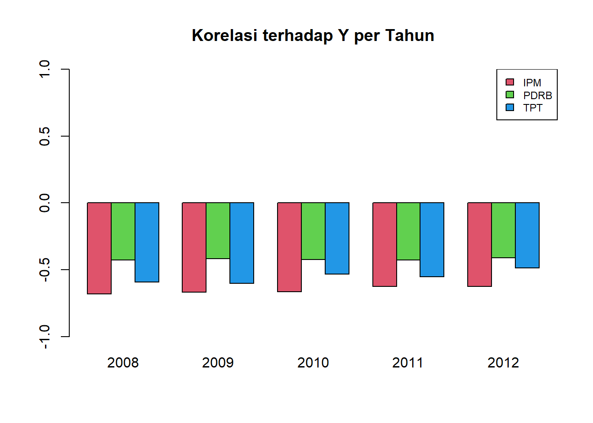

4 Regresi Data Panel Spasial
Pemodelan ini merupakan salah satu alternatif yang dapat dilakukan ketika data yang kita kaji selain merupakan data spasial, juga merupakan data deret waktu.
Tahapan yang dapat dilakukan dalam melakukan pemodelan regresi data panel adalah sebagai berikut:
melakukan eksplorasi hubungan antar peubah, sebaran data, dsb.
menganalisa data panel dengan melakukan pengujian berikut:
Uji Breusch-Pagan untuk menguji adanya efek waktu, individu atau keduanya
Uji Chow untuk menguji signifikansi antara model gabungan dan model pengaruh tetap
Uji Hausman untuk menguji signifikansi antara model pengaruh acak dengan model pengaruh tetap
melakukan pemodelan data panel sesuai dengan indikasi yang diperoleh pada tahap (1) s.d (3)
mengevaluasi kebaikan model
Sedangkan tahapan dalam pemodelan data panel spasial adalah: (Rakhmi, 2015)
Eksplorasi Data
Uji ketergantungan spasial, dapat menggunakan uji CD Pesaran dengan hipotesis sebagai berikut:
\(H_0: \rho_{ij}=\rho_{ji}= korelasi(\varepsilon_{it}, \varepsilon_{jt})=0\), untuk \(i \ne j\)
\(H_1: \rho_{ij}=\rho_{ji} \ne 0\) , untuk beberapa \(i \ne j\)
Bila perlu, menguji autokorelasi spasial pada peubah penjelas, dapat menggunakan uji Moran.
Sesuai dengan indikasi pada tahapan sebelumnya, kita dapat melakukan pemodelan data panel spasial, dengan menggunakan matriks pembobot spasial yang sesuai.
Mengevaluasi kebaikan model yang disusun pada tahap (4).
Menginterpretasikan model.
4.1 Ilustrasi: Kemiskinan di Pulau Jawa
Sebagai ilustrasi, modul ini akan membahas studi kasus yang diteliti oleh Agusti (2015). Pada ilustrasi ini, kita akan mengamati persentasi kemiskinan di kabupaten dan kota di Pulau Jawa pada tahun 2008-2012, dengan rincian peubah sebagai berikut:
Y = Persentase Kemiskinan di kabupaten/kota di Pulau Jawa
X1 = Indeks Pembangunan Manusia (IPM)
X2 = Tingkat Pengangguran Terbuka (TPT)
X3 = Pertumbuhan Ekonomi (PDRB)
Pertama-tama, kita impor data peta tematik pulau Jawa dan data pengamatan ke dalam R.
data<-read.csv("data panel Jawa.csv", header = T)
head(data)## Id Provinsi KabKot Tahun Kemiskinan IPM PDRB TPT
## 1 3101 DKI JAKARTA Kep. Seribu 2008 13.56 70.14 3.45 11.67
## 2 3101 DKI JAKARTA Kep. Seribu 2009 12.66 70.50 3.48 11.57
## 3 3101 DKI JAKARTA Kep. Seribu 2010 13.01 70.82 4.06 9.89
## 4 3101 DKI JAKARTA Kep. Seribu 2011 11.53 71.16 5.34 11.38
## 5 3101 DKI JAKARTA Kep. Seribu 2012 11.62 71.45 5.63 13.97
## 6 3171 DKI JAKARTA Kota Jakarta Selatan 2008 3.41 79.00 152.15 11.964.2 Eksplorasi Data
y<-matrix(NA, nrow=5, ncol=119) # 5 tahun, 118 kota/kabupaten
y[,1]<-2008:2012
a=2
for (i in 1:118)
{
y[,i+1]<-data[a:(a+4),5]
a=a+5
}
palette("default")
y<-as.data.frame(y)
matplot(y[,1], y[,-1], type="l", pch=19, ylab="Persentase Kemiskinan", xlab="Tahun")
#install.packages("foreign")
library(foreign)
data1<-subset(data,data$Provinsi=="DKI JAKARTA")
coplot(Kemiskinan~Tahun|KabKot, type="l", data=data1)
prov<-unique(data$Provinsi)
for (i in 1:length(prov))
{
data1<-subset(data,data$Provinsi==prov[i])
car::scatterplot(Kemiskinan~Tahun|KabKot, boxplots=F, smooth=F, legend=F,
grid=T,data=data1, reset.par=T, cex=0.5, main=prov[i])
}


plot(data[,5:8], pch=16, col="blue", main="Scatterplot antar Pasangan Peubah pada 2008-2012")
Scatterplot memperlihatkan bahwa IPM dan PDRB cenderung memiliki hubungan yang berbanding terbalik dengan persentase kemiskinan. Sedangkan pola hubungan antara persentase kemiskinan dengan peubah TPT memiliki ragam yang cukup besar sehingga agak sulit untuk mengidentifikasinya.
a=1; korelasipertahun<-NULL;
for (i in 1:5)
{
korelasi<-cor(data[a:(a+4),5:8])[-1,1]
a=a+5
korelasipertahun<-cbind(korelasipertahun,korelasi)
}
colnames(korelasipertahun)<-2008:2012
barplot(korelasipertahun , beside=T, ylim=c(-1,1), col=2:4,main="Korelasi terhadap Y per Tahun")
legend("bottomright",c("IPM", "PDRB", "TPT"),
fill = 2:4, cex=0.75)
korelasipertahun## 2008 2009 2010 2011 2012
## IPM -0.9035923 -0.01758226 -0.8295863 0.1198465 0.07306023
## PDRB -0.9110926 -0.01161981 -0.8315061 0.1050094 0.07401256
## TPT -0.5155555 -0.33560415 0.9220472 -0.3772710 -0.132340284.3 Identifikasi Keragaman Antar Individu dan Antar Waktu
boxplot(Kemiskinan~Tahun, data=data)
boxplot(Kemiskinan~KabKot, data=data)
4.4 Pemodelan Data Panel
4.4.1 Model Gabungan
a<-scale(data[,5:8])
data1<-cbind(data[,c(3,4)],a)
head(data1)## KabKot Tahun Kemiskinan IPM PDRB TPT
## 1 Kep. Seribu 2008 -0.01086532 -0.5558484 -0.5182081 1.0499174
## 2 Kep. Seribu 2009 -0.15332169 -0.4615811 -0.5174904 1.0239017
## 3 Kep. Seribu 2010 -0.09792199 -0.3777880 -0.5036157 0.5868385
## 4 Kep. Seribu 2011 -0.33218358 -0.2887578 -0.4729957 0.9744719
## 5 Kep. Seribu 2012 -0.31793795 -0.2128203 -0.4660583 1.6482777
## 6 Kota Jakarta Selatan 2008 -1.61745665 1.7641735 3.0389792 1.1253628library(plm)##
## Attaching package: 'plm'## The following objects are masked from 'package:dplyr':
##
## between, lag, leadmodel.pool<-plm(Kemiskinan~IPM+PDRB+TPT, data=data1, model="pooling")
summary(model.pool)## Pooling Model
##
## Call:
## plm(formula = Kemiskinan ~ IPM + PDRB + TPT, data = data1, model = "pooling")
##
## Balanced Panel: n = 118, T = 5, N = 590
##
## Residuals:
## Min. 1st Qu. Median 3rd Qu. Max.
## -1.541302 -0.465061 -0.078632 0.375658 2.393066
##
## Coefficients:
## Estimate Std. Error t-value Pr(>|t|)
## (Intercept) 6.9268e-16 2.7939e-02 0.0000 1
## IPM -5.2289e-01 3.1199e-02 -16.7600 < 2.2e-16 ***
## PDRB -1.4241e-01 3.0670e-02 -4.6431 4.239e-06 ***
## TPT -2.8226e-01 2.9722e-02 -9.4965 < 2.2e-16 ***
## ---
## Signif. codes: 0 '***' 0.001 '**' 0.01 '*' 0.05 '.' 0.1 ' ' 1
##
## Total Sum of Squares: 589
## Residual Sum of Squares: 269.87
## R-Squared: 0.54181
## Adj. R-Squared: 0.53947
## F-statistic: 230.985 on 3 and 586 DF, p-value: < 2.22e-16Model di atas adalah model gabungan, atau sama dengan model OLS (ordinary least squares). Selanjutnya, kita perlu mengidentifikasi apakah terdapat pengaruh individu atau waktu, atau keduanya, serta yang manakah di antara model gabungan, tetap , atau acak yang paling sesuai untuk digunakan.
plmtest(model.pool,data=data1,type="bp",effect = "time")##
## Lagrange Multiplier Test - time effects (Breusch-Pagan) for balanced
## panels
##
## data: Kemiskinan ~ IPM + PDRB + TPT
## chisq = 89.555, df = 1, p-value < 2.2e-16
## alternative hypothesis: significant effectsplmtest(model.pool,data=data1,type="bp",effect = "individual")##
## Lagrange Multiplier Test - (Breusch-Pagan) for balanced panels
##
## data: Kemiskinan ~ IPM + PDRB + TPT
## chisq = 893.81, df = 1, p-value < 2.2e-16
## alternative hypothesis: significant effects#install.packages("plm")
library(plm)
plmtest(model.pool,type="bp",effect = "twoways")##
## Lagrange Multiplier Test - two-ways effects (Breusch-Pagan) for
## balanced panels
##
## data: Kemiskinan ~ IPM + PDRB + TPT
## chisq = 983.37, df = 2, p-value < 2.2e-16
## alternative hypothesis: significant effectsDari hasil di atas, dapat disimpulkan bahwa terdapat pengaruh signifikan yang diakibatkan oleh waktu dan individu.
4.4.2 Uji Chow
Untuk mengidentifikasi salah satu di antara model gabungan dan model tetap yang lebih sesuai untuk digunakan, terlebih dulu dibangun model dengan pengaruh tetap. Terdapat empat kemungkinan model yang dapat diidentifikasi melalui uji Chow, yaitu:
jika kita menolak \(H_0\) pada pengujian pengaruh spesifik individu dan waktu, maka model yang sesuai adalah model pengaruh tetap komponen sisaan dua arah
jika kita menolak \(H_0\) pada pengujian pengaruh spesifik individu, maka model yang sesuai adalah model pengaruh tetap individu
jika kita menolak \(H_0\) pada pengujian pengaruh spesifik waktu, maka model yang sesuai adalah model pengaruh tetap waktu
jika kita gagal menolak \(H_0\) pada pengujian pengaruh spesifik individu dan waktu, maka model yang sesuai adalah model gabungan.
Pada ilustrasi ini, sebelumnya telah ditunjukkan bahwa terdapat pengaruh individu dan pengaruh waktu terhadap kemiskinan, sehingga pada tahap ini akan diuji model dengan komponen sisaan dua arah.
model.fixed<-plm(Kemiskinan~IPM+PDRB+TPT, data=data1, model="within", effect="twoways")
summary(model.fixed)## Twoways effects Within Model
##
## Call:
## plm(formula = Kemiskinan ~ IPM + PDRB + TPT, data = data1, effect = "twoways",
## model = "within")
##
## Balanced Panel: n = 118, T = 5, N = 590
##
## Residuals:
## Min. 1st Qu. Median 3rd Qu. Max.
## -0.398939 -0.069804 0.001862 0.066238 0.361103
##
## Coefficients:
## Estimate Std. Error t-value Pr(>|t|)
## IPM -1.139669 0.100627 -11.3257 < 2.2e-16 ***
## PDRB 0.137278 0.029365 4.6749 3.859e-06 ***
## TPT -0.058057 0.014710 -3.9469 9.142e-05 ***
## ---
## Signif. codes: 0 '***' 0.001 '**' 0.01 '*' 0.05 '.' 0.1 ' ' 1
##
## Total Sum of Squares: 10.232
## Residual Sum of Squares: 7.0096
## R-Squared: 0.31495
## Adj. R-Squared: 0.13227
## F-statistic: 71.2597 on 3 and 465 DF, p-value: < 2.22e-16Setelah menyusun model dengan pengaruh tetap, selanjutnya kita dapat menggunakan uji Chow untuk mengidentifikasi kesesuaian model antara model gabungan atau model dengan pengaruh tetap.
pFtest(model.fixed, model.pool)##
## F test for twoways effects
##
## data: Kemiskinan ~ IPM + PDRB + TPT
## F = 144.11, df1 = 121, df2 = 465, p-value < 2.2e-16
## alternative hypothesis: significant effectsBerdasarkan uji Chow pada output di atas, p-value\(<\alpha=0.05\), sehingga dapat disimpulkan bahwa model yang sesuai adalah model pengaruh tetap komponen sisaan dua arah. Selanjutnya, kita masih harus mengidentifikasi lebih lanjut apakah model pengaruh acak lebih sesuai untuk digunakan dibandingkan dengan model pengaruh tetap.
4.4.3 Uji Hausman
Pada tahap ini kita akan mengidentifikasi lebih lanjut mengenai kesuaian model antara model dengan pengaruh tetap atau pengaruh acak.
model.random<-plm(Kemiskinan~IPM+PDRB+TPT, data=data1, model="random", effect="twoways")
summary(model.random)## Twoways effects Random Effect Model
## (Swamy-Arora's transformation)
##
## Call:
## plm(formula = Kemiskinan ~ IPM + PDRB + TPT, data = data1, effect = "twoways",
## model = "random")
##
## Balanced Panel: n = 118, T = 5, N = 590
##
## Effects:
## var std.dev share
## idiosyncratic 0.0150743 0.1227776 0.035
## individual 0.4111332 0.6411967 0.964
## time 0.0001843 0.0135741 0.000
## theta: 0.9147 (id) 0.3601 (time) 0.3597 (total)
##
## Residuals:
## Min. 1st Qu. Median 3rd Qu. Max.
## -0.454852 -0.083503 -0.010059 0.071157 0.533129
##
## Coefficients:
## Estimate Std. Error z-value Pr(>|z|)
## (Intercept) 1.4693e-15 6.5106e-02 0.0000 1.000000
## IPM -1.0194e+00 3.9214e-02 -25.9955 < 2.2e-16 ***
## PDRB 9.0152e-02 2.8350e-02 3.1800 0.001473 **
## TPT -4.1548e-02 1.4364e-02 -2.8925 0.003822 **
## ---
## Signif. codes: 0 '***' 0.001 '**' 0.01 '*' 0.05 '.' 0.1 ' ' 1
##
## Total Sum of Squares: 22.996
## Residual Sum of Squares: 10.558
## R-Squared: 0.5409
## Adj. R-Squared: 0.53855
## Chisq: 690.408 on 3 DF, p-value: < 2.22e-16Hipotesis yang diuji pada uji Hausman adalah:
\(H_0: E(u_{it}|x_{k, it})=0\) (model pengaruh acak)
\(H_1: E(u_{it}|x_{k, it}) \ne 0\) (model pengaruh tetap)
phtest(model.fixed, model.random)##
## Hausman Test
##
## data: Kemiskinan ~ IPM + PDRB + TPT
## chisq = 57.774, df = 3, p-value = 1.756e-12
## alternative hypothesis: one model is inconsistentTerlihat pada output bahwa kita dapat menolak hipotesis nol pada taraf nyata 0.05, artinya model yang lebih tepat digunakan adalah model dengan pengaruh tetap.
summary(model.fixed)## Twoways effects Within Model
##
## Call:
## plm(formula = Kemiskinan ~ IPM + PDRB + TPT, data = data1, effect = "twoways",
## model = "within")
##
## Balanced Panel: n = 118, T = 5, N = 590
##
## Residuals:
## Min. 1st Qu. Median 3rd Qu. Max.
## -0.398939 -0.069804 0.001862 0.066238 0.361103
##
## Coefficients:
## Estimate Std. Error t-value Pr(>|t|)
## IPM -1.139669 0.100627 -11.3257 < 2.2e-16 ***
## PDRB 0.137278 0.029365 4.6749 3.859e-06 ***
## TPT -0.058057 0.014710 -3.9469 9.142e-05 ***
## ---
## Signif. codes: 0 '***' 0.001 '**' 0.01 '*' 0.05 '.' 0.1 ' ' 1
##
## Total Sum of Squares: 10.232
## Residual Sum of Squares: 7.0096
## R-Squared: 0.31495
## Adj. R-Squared: 0.13227
## F-statistic: 71.2597 on 3 and 465 DF, p-value: < 2.22e-16Model dapat dituliskan sebagai berikut:
\[y_{it}=-1.139669x_{1it}+0.137278x_{2it}-0.058057x_{3it}+\hat{\mu}_i+\varepsilon_{it}\]
4.5 Pemodelan Data Panel Spasial
Peta persebaran jumlah penduduk miskin di kabupaten/kota di pulau Jawa pada tahun 2012 terlihat pada gambar berikut.
library(rgdal)
library(spdep)
library(raster)
library(sp)
library(spatialreg)
petajawa<-readOGR(dsn='Jawamap',layer='jawa')## OGR data source with driver: ESRI Shapefile
## Source: "D:\Jobs\Pelatihan Spasial STIS\New folder\Pelatihan-Spasial\Jawamap", layer: "jawa"
## with 119 features
## It has 5 fieldspetajawa@data[24,] #dihilangkan dari peta karena tidak ada dalam data pengamatan## PROVNO KABKOTNO PROVINSI KABKOT ID2013
## 23 32 18 JAWA BARAT PANGANDARAN 3218petajawa<-petajawa[-24,]
data2012<-subset(data, data$Tahun==2012)
petajawa$Kemiskinan<-data2012$Kemiskinan
spplot(petajawa, "Kemiskinan", main="Persentase Penduduk Miskin 2012")
4.5.1 Uji Ketergantungan Spasial pada Data Panel
Seperti yang telah dijelaskan pada bagian awal modul ini, kita dapat menggunakan uji cross-sectional dependency (CD) Pesaran untuk mengidentifikasi ketergantungan spasial pada data panel.
library(splm)## Warning: package 'splm' was built under R version 4.0.4w<-as.matrix(1/dist(coordinates(petajawa)))
ww<-w
for(i in 1:118)
{
ww[i,]<-ww[i,]/apply(w,1,sum)[i]
}
rowSums(ww)## 0 1 2 3 4 5 6 7 8 9 10 11 12 13 14 15 16 17 18 19
## 1 1 1 1 1 1 1 1 1 1 1 1 1 1 1 1 1 1 1 1
## 20 21 22 24 25 26 27 28 29 30 31 32 33 34 35 36 37 38 39 40
## 1 1 1 1 1 1 1 1 1 1 1 1 1 1 1 1 1 1 1 1
## 41 42 43 44 45 46 47 48 49 50 51 52 53 54 55 56 57 58 59 60
## 1 1 1 1 1 1 1 1 1 1 1 1 1 1 1 1 1 1 1 1
## 61 62 63 64 65 66 67 68 69 70 71 72 73 74 75 76 77 78 79 80
## 1 1 1 1 1 1 1 1 1 1 1 1 1 1 1 1 1 1 1 1
## 81 82 83 84 85 86 87 88 89 90 91 92 93 94 95 96 97 98 99 100
## 1 1 1 1 1 1 1 1 1 1 1 1 1 1 1 1 1 1 1 1
## 101 102 103 104 105 106 107 108 109 110 111 112 113 114 115 116 117 118
## 1 1 1 1 1 1 1 1 1 1 1 1 1 1 1 1 1 1rwtest(model.fixed, w=ww)##
## Randomized W test for spatial correlation of order 1
##
## data: formula
## p-value < 2.2e-16
## alternative hypothesis: twosidedTerlihat pada output di atas bahwa p-value \(<\alpha=0.05\) maka kita dapat menyimpulkan bahwa hipotesis nol ditolak, artinya pada data panel kemiskinan ini terdapat ketergantungan spasial pada peubah responnya. Hal ini mengindikasikan bahwa kemiskinan di suatu kab/kota, selain dipengaruhi oleh peubah penjelas yang dimilikinya, juga dipengaruhi oleh kemiskinan di kab/kota lain.
4.5.2 Uji Spesifikasi Model
Menurut Salima et. al, spesifikasi model pada pemodelan data panel spasial adalah sebagai berikut.
4.5.3 Standard model: model dengan pengaruh spesifik individu
\(y_{it}=x_{it}\beta + z_i\alpha + \varepsilon_{it}\)
dimana \(z_i\alpha\) merupakan pengaruh spesifik individu.
Model gabungan
\(y_{it}=x_{it}\beta + \alpha + \varepsilon_{it}\)
Model ini tidak memodelkan heterogenitas individu, dan pada kasus ini penduga \(\beta\) dan \(\alpha\) diperoleh dengan Ordinary Least Squares (OLS).
Model Pengaruh Tetap
\(y_{it}=x_{it}\beta + \alpha_i + \varepsilon_{it}\)
Model Pengaruh Acak
\(y_{it}=x_{it}\beta + \alpha + u_{it}\) \(u_{it}=\alpha_i + \varepsilon_{it}\)
Model ini biasanya diduga dengan Generalized Least Squares (GLS).
4.5.4 Efek Spasial pada Model Data Panel
Efek spasial pada model gabungan
\(y_{it}=\rho\sum_{i \ne j} w_{ij} y_{jt} + x_{it}\beta + \sum_{i \ne j} w_{ij} x_{jt} \theta + \alpha + u_{it}\)
\(u_{it}=\lambda \sum_{i \ne j} w_{ij} u_{jt} + \varepsilon_{it}\)
Efek spasial pada model pengaruh tetap
Spatial autoregressive model (SAR)
\(y_{it}=\rho\sum_{i \ne j} w_{ij} y_{jt} + x_{it}\beta + \alpha_i + u_{it}\)
Spatial error model (SEM)
\(y_{it}= x_{it}\beta + \alpha_i + u_{it}\)
\(u_{it}=\lambda \sum_{i \ne j} w_{ij} u_{jt} + \varepsilon_{it}\)
Durbin spatial model (DSM)
\(y_{it}=x_{it}\beta + \sum_{i \ne j} w_{ij} x_{jt} \theta + \alpha_i + u_{it}\)
Durbin spatial error model (SDEM)
\(y_{it}= x_{it}\beta + \sum_{i \ne j} w_{ij} x_{jt} \theta + \alpha_i + u_{it}\)
\(u_{it}=\lambda \sum_{i \ne j} w_{ij} u_{jt} + \varepsilon_{it}\)
Spatial autoregressive lag and error model (SARAR)
\(y_{it}=\rho\sum_{i \ne j} w_{ij} y_{jt} + x_{it}\beta + \alpha_i + u_{it}\)
\(u_{it}=\lambda \sum_{i \ne j} m_{ij} u_{jt} + \varepsilon_{it}\)
dimana \(w_{ij}\) dan \(m_{ij}\) merupakan pembobot spasial.
Spatial Error Model-Random Effect
\(y_{it}=\rho\sum_{i \ne j} w_{ij} y_{jt} + x_{it}\beta + \alpha + u_{it}\)
\(u_{it}=\lambda \sum_{i \ne j} w_{ij} u_{jt} + \nu_{it}\)
4.5.4.1 Hausmans robust test of spatial autocorrelation
Uji ini dilakukan untuk mengidentifikasi kesesuaian model dengan pengaruh tetap atau acak. Hipotesis nol yang diuji adalah: \(H_0: E[\alpha|X]=0\). Jika hipotesis ini ditolak, artinya model yang lebih sesuai adalah model dengan pengaruh tetap.
library(splm)
print(panelhausman<-phtest(Kemiskinan~IPM+PDRB+TPT, data=data1))##
## Hausman Test
##
## data: Kemiskinan ~ IPM + PDRB + TPT
## chisq = 226.68, df = 3, p-value < 2.2e-16
## alternative hypothesis: one model is inconsistentprint(spat.hausman.SEM<-sphtest(Kemiskinan~IPM+PDRB+TPT, data=data1, listw=mat2listw(ww),spatial.model="error"))##
## Hausman test for spatial models
##
## data: x
## chisq = 39.506, df = 3, p-value = 1.356e-08
## alternative hypothesis: one model is inconsistentprint(spat.hausman.SAR<-sphtest(Kemiskinan~IPM+PDRB+TPT, data=data1, listw=mat2listw(ww),spatial.model="lag"))##
## Hausman test for spatial models
##
## data: x
## chisq = 36.181, df = 3, p-value = 6.857e-08
## alternative hypothesis: one model is inconsistentTerlihat pada output di atas, maka model yang lebih sesuai digunakan adalah model dengan pengaruh tetap.
4.5.4.2 Uji Spesifikasi untuk Pengaruh Spasial
Fungsi bsktest dapat menghitung uji gabungan, marginal, ataupun conditional untuk pengaruh acak dan korelasi galat spasial. Hipotesis yang diuji adalah sebagai berikut. (Milo dan Piras, 2012)
/pelatihan spasial (adj)/Modul/hipotesis-lm-splm.PNG)
Untuk model tetap, uji Lagrange dapat dilakukan untuk mengidentifikasi spesifikasi pengaruh spasial pada model.
# Uji 1
slmtest(Kemiskinan~IPM+PDRB+TPT, data=data1, listw=mat2listw(ww),test="lml", model="within")##
## LM test for spatial lag dependence
##
## data: formula (within transformation)
## LM = 86.153, df = 1, p-value < 2.2e-16
## alternative hypothesis: spatial lag dependence# Uji 2
slmtest(Kemiskinan~IPM+PDRB+TPT, data=data1, listw=mat2listw(ww),test="lme", model="within")##
## LM test for spatial error dependence
##
## data: formula (within transformation)
## LM = 239.59, df = 1, p-value < 2.2e-16
## alternative hypothesis: spatial error dependenceUji robust dapat dilakukan untuk membantu menentukan spesifikasi model apabila uji sebelumnya, kedua uji untuk model SAR dan SEM sama-sama siginifikan.
# Uji 3
slmtest(Kemiskinan~IPM+PDRB+TPT, data=data1, listw=mat2listw(ww),test="rlml", model="within")##
## Locally robust LM test for spatial lag dependence sub spatial error
##
## data: formula (within transformation)
## LM = 2.3656, df = 1, p-value = 0.124
## alternative hypothesis: spatial lag dependence# Uji 4
slmtest(Kemiskinan~IPM+PDRB+TPT, data=data1, listw=mat2listw(ww),test="rlme", model="within")##
## Locally robust LM test for spatial error dependence sub spatial lag
##
## data: formula (within transformation)
## LM = 155.8, df = 1, p-value < 2.2e-16
## alternative hypothesis: spatial error dependence4.5.5 Model Panel SAR
panel.sar<-spml(Kemiskinan~IPM+PDRB+TPT, data=data1, listw=mat2listw(ww),model="within",
effect = "twoways", lag=T, spatial.error = "none")
summary(panel.sar)## Spatial panel fixed effects lag model
##
##
## Call:
## spml(formula = Kemiskinan ~ IPM + PDRB + TPT, data = data1, listw = mat2listw(ww),
## model = "within", effect = "twoways", lag = T, spatial.error = "none")
##
## Residuals:
## Min. 1st Qu. Median 3rd Qu. Max.
## -0.3547835 -0.0672962 0.0054614 0.0652831 0.3475310
##
## Spatial autoregressive coefficient:
## Estimate Std. Error t-value Pr(>|t|)
## lambda 0.52996 0.09744 5.4389 5.362e-08 ***
##
## Coefficients:
## Estimate Std. Error t-value Pr(>|t|)
## IPM -1.132105 0.086967 -13.0176 < 2.2e-16 ***
## PDRB 0.121054 0.025466 4.7535 1.999e-06 ***
## TPT -0.047154 0.012776 -3.6909 0.0002234 ***
## ---
## Signif. codes: 0 '***' 0.001 '**' 0.01 '*' 0.05 '.' 0.1 ' ' 1#db=t*n-(k+1)-n
db<-(5*118)-(3+1)-118
sqrt(sum(panel.sar$resid^2)/db) ## Standard Error of Regression## [1] 0.1191296summary(panel.sar)$rsqr ## Pseudo-R2## [1] 0.98872364.5.6 Model Panel SEM
panel.sem<-spml(Kemiskinan~IPM+PDRB+TPT, data=data1, listw=mat2listw(ww),model="within",
effect = "twoways", lag=F)
summary(panel.sem)## Spatial panel fixed effects error model
##
##
## Call:
## spml(formula = Kemiskinan ~ IPM + PDRB + TPT, data = data1, listw = mat2listw(ww),
## model = "within", effect = "twoways", lag = F)
##
## Residuals:
## Min. 1st Qu. Median 3rd Qu. Max.
## -0.4023151 -0.0699875 0.0011909 0.0672228 0.3628160
##
## Spatial error parameter:
## Estimate Std. Error t-value Pr(>|t|)
## rho 0.51726 0.10568 4.8948 9.841e-07 ***
##
## Coefficients:
## Estimate Std. Error t-value Pr(>|t|)
## IPM -1.121679 0.086057 -13.0341 < 2.2e-16 ***
## PDRB 0.126167 0.026015 4.8497 1.236e-06 ***
## TPT -0.047787 0.013025 -3.6688 0.0002437 ***
## ---
## Signif. codes: 0 '***' 0.001 '**' 0.01 '*' 0.05 '.' 0.1 ' ' 1sqrt(sum(panel.sem$resid^2)/db) ## Standard Error of Regression## [1] 0.1224889summary(panel.sem)$rsqr ## Pseudo-R2## [1] 0.98807874.5.7 Model Panel GSM
panel.gsm<-spml(Kemiskinan~IPM+PDRB+TPT, data=data1, listw=mat2listw(ww),model="within",
effect = "twoways", lag=T)
summary(panel.gsm)## Spatial panel fixed effects sarar model
##
##
## Call:
## spml(formula = Kemiskinan ~ IPM + PDRB + TPT, data = data1, listw = mat2listw(ww),
## model = "within", effect = "twoways", lag = T)
##
## Residuals:
## Min. 1st Qu. Median 3rd Qu. Max.
## -0.3359218 -0.0646201 0.0040778 0.0639445 0.3500236
##
## Spatial error parameter:
## Estimate Std. Error t-value Pr(>|t|)
## rho -0.43578 0.22909 -1.9022 0.05714 .
##
## Spatial autoregressive coefficient:
## Estimate Std. Error t-value Pr(>|t|)
## lambda 0.721893 0.094678 7.6247 2.445e-14 ***
##
## Coefficients:
## Estimate Std. Error t-value Pr(>|t|)
## IPM -1.121340 0.086980 -12.8919 < 2.2e-16 ***
## PDRB 0.119617 0.024785 4.8262 1.391e-06 ***
## TPT -0.047253 0.012451 -3.7951 0.0001476 ***
## ---
## Signif. codes: 0 '***' 0.001 '**' 0.01 '*' 0.05 '.' 0.1 ' ' 1sqrt(sum(panel.gsm$resid^2)/db) ## Standard Error of Regression## [1] 0.118768summary(panel.gsm)$rsqr ## Pseudo-R2## [1] 0.9887924.5.8 Menentukan Model Terbaik
Berikut ini adalah ringkasan dari pemodelan yang telah dilakukan pada tahap-tahap sebelumnya:
## Kriteria Panel_SAR Panel_SEM PANEL_GSM
## 1 SE of Regression 0.1191 0.1225 0.1188
## 2 Pseudo-R2 0.9887 0.9881 0.9888
## 3 p-value of lambda 0.0000 NA 0.0000
## 4 p-value of rho NA 0.0000 0.0571Berdasarkan output di atas, model terbaik adalah model panel SAR.
4.5.9 Interpretasi Model
lw<- mat2listw(ww, style ="W")
spdep::impacts(panel.sar, listw=lw, time = 5)## Impact measures (lag, trace):
## Direct Indirect Total
## IPM -1.14756006 -1.2609854 -2.4085455
## PDRB 0.12270607 0.1348344 0.2575405
## TPT -0.04779766 -0.0525220 -0.10031974.6 Sumber Pustaka
Agusti, R. (2015). Pemodelan data panel kemiskinan tak seimbang di pulau Jawa dnegna model spasial durbin [Tesis]. IPB.
Millo, G., & Piras, G. (2012). splm: Spatial panel data models in R. Journal of Statistical Software, 47(1), 1-38.
Salima, B.A., Julie, L., Lionel, V. (2018). Spatial Econometrics on Panel Data. Handbook of spatial analysisTheory and practical application with R. INSEE Eurostat, Luxembourg, 179-203.